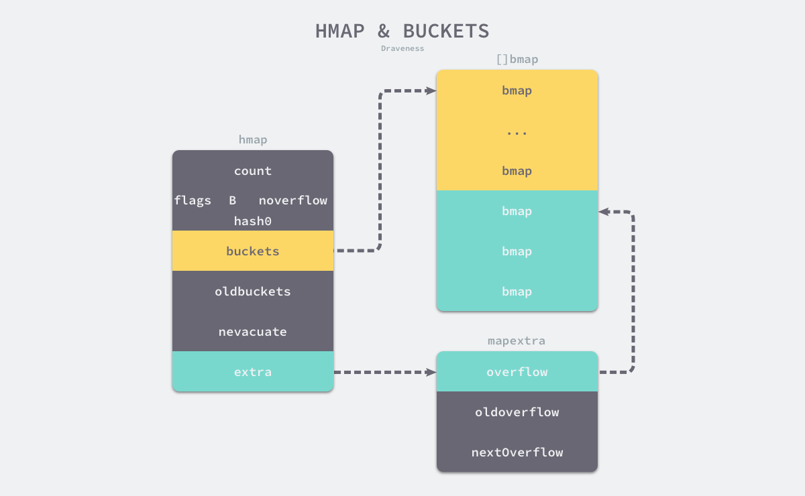
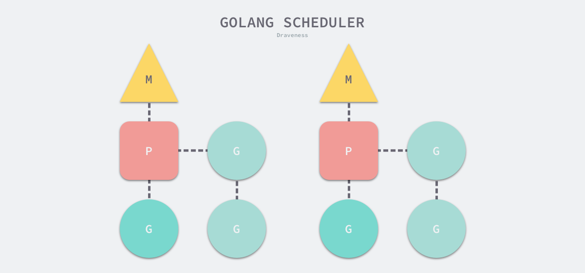

Go quick start
Ref
TODO
select/defer/panic&recover
Timer: Go 定时器实现
内存分配器/垃圾收集器/栈内存管理
Json/HTTP/数据库等标准库
同步原语拓展部分 ErrGroup/Semaphore/SingleFlight
深入理解 GMP 模型、网络轮询器
Go Lambda 变量逃逸
nil and ...args?
sync.pool 原理
语法基础
for & range
for range 是 Go 中常用的范围遍历方法，在 Go 的实现中，会将 for range 转换为普通的 for 循环进行处理。
数组和切片，数组和切片可以通过 for range 进行遍历，可细分为三种不同的遍历，即是否使用 range 返回的 index 和 value。
xxxxxxxxxx51arr := [...]int{1, 2, 3}2for range arr {}3for _ = range arr {}4for _, _ = range arr {}5
在 for range 实现中，会先通过 len( ) 方法获取 arr 的长度，作为 for 的遍历次数，因此在 for range 中对 arr 进行修改不能够改变 for range 的遍历次数。如下示例所示。
xxxxxxxxxx61arr := []int{1, 2, 3}2for range arr {3 arr = append(arr, 1)4}5fmt.Println("appended arr: ", arr)6
并且，在 for range 中得到 value，不是 arr 中的 value，而是 Go 将 for range 转换为 for 之后，在 for 中拷贝了对应 arr 值的一个临时变量。观察以下代码输出，将发现 v 的地址不随 for 循环而改变，说明 v 指向的地址并不是 arr 中的变量所在内存。
xxxxxxxxxx31for _, v := range arr {2 fmt.Println("v addr: ", &v)3}因为上述原因，直接通过切片的方式在 for range 中删除元素将导致错误的预期结果。如以下代码所示，该代码不能够正确的删除 arr 中的所有元素，而将导致访问越界的错误。
xxxxxxxxxx41for i := range arr {2 arr = append(arr[0:i], arr[i+1:]...)3 fmt.Println(arr)4}正确的删除 for range 中的变量的做法是，使用临时内存将不需要删除的变量进行拷贝。
xxxxxxxxxx181result := []int{}2for i := range arr {3 if arr[i] < 2 {4 result = append(result, arr[i])5 }6}7fmt.Println(result)8
9// 一种会改变 arr 顺序，但不需要额外内存空间的方法10j := 011for i := range arr {12 if arr[i] >= 2 {13 arr[i] = arr[j]14 j++15 }16}17arr = arr[j:]18fmt.Println(arr)map、string、channel 的 for range 分析
select
defer
panic & recover
make & new
make 关键字返回 slice、hash、chan 等内置数据结构的结构体。
xxxxxxxxxx21make([]int, 1, 5) // 参数分别为（初始化数据类型，长度，容量）2new 只返回对应数据结构体大小的指针，并将指针指向的内存置零。
面向对象编程
interface & struct
interface 实现了一种抽象，使得模块之间通过接口进行通信，而不关注接口背后具体的实现。
在 Go 中，interface 分为 iface 和 eface 两种，interface 本质上是一种特殊的结构体。
- 其中 iface 是有方法的 interface，iface 结构体包含了接口类型和具体类型，数据指针等内容。
- 而 eface 是没有方法的、特殊的 interface，其结构体中仅包含具体类型和数据指针。
类型转换，类型转换是指实现了不同 interface 的变量转换为某一抽象的 interface 的过程。
如果变量是结构体指针，则转换后的 iface 和 eface 中的数据指针指向结构体指针对应的结构体内存。
而当变量是结构体，Go 首先将结构体进行拷贝，然后使 iface 和 eface 中的数据指针指向拷贝后的内存。
因此，对结构体转换而来的 interface，将 interface 通过类型断言转换为原类型变量后，与转换前的变量是不同的变量。如下代码所示，foo 与 foo2 是不同的变量，foo 不会因 foo2 的修改而发生改变。
xxxxxxxxxx91type Foo struct {2v int3}45var fooInter FooInterface = foo6foo2 := fooInter.(Foo)7foo2.v = 998fmt.Println("convert struct to interface, copy happen, old foo still is", foo)9相同的，对 iface 而言，由结构体接收者实现的 interface 方法是不能够改变调用者结构体中的内部变量。由结构体指针接收者实现的 interface 方法能够改变调用者结构体中内部的变量，但是结构体初始化的变量不能够转换为该由结构体指针实现方法的 interface，因为结构体在转换为 iface 时将发生拷贝，此时 Go 不能够找到对应的结构体指针接收者。示例如下：
xxxxxxxxxx221type FooInterface interface {2hello()3}45type Foo struct {6v int7}89func (f Foo) hello() {10// can't modify f because the f is a struct instead of pointer11f.v = 99912}1314func interfaceExample() {15println("interface example")16foo := Foo{v: 1}17// if hello() is func(f *Foo) hello(),18// this convert is impossible.19var fooInterface FooInterface = foo20fooInterface.hello()21}22
反射
反射是一种在运行时获取类型信息，并进行修改的方法。Go 中反射主要由 reflect.TypeOf 和 reflect.ValueOf 两个方法构成。TypeOf 能够获取变量的类型，ValueOf 能够获取变量的值，有了变量的类型和值，就能够实现对变量的所有操作。
TypeOf 方法返回一个 reflect.Type 的接口，而 ValueOf 方法返回一个 reflect.Value 的结构体。Type 接口定义了 Methods 等方法，用来获取类型拥有的方法、字段等，而 Value 定义了各种获取变量的值的方法。
通过反射调用变量的方法，改变变量的值如下代码所示：
xxxxxxxxxx181type Foo struct {2 v int3 C int4}5
6func reflectExample() {7 println("reflect example")8 foo := Foo{v: 1}9 fooTyp := reflect.TypeOf(foo)10 nMethod := fooTyp.NumMethod()11 for i := 0; i < nMethod; i++ {12 fooTyp.Method(i).Func.Call([]reflect.Value{})13 }14 fooVal := reflect.ValueOf(&foo)15 fooVal.Elem().Field(1).SetInt(99)16 fmt.Printf("foo: %#v\\n", foo)17}18
补充 TypeOf/ValueOf 等方法源码分析
标准容器
数组
数组是只能存储固定数量相同类型数据的数据结构。
xxxxxxxxxx31arr := [3]int{1,2,3}2arr2 := [...]int{1,2,3}3
slice
切片是一种动态数组，其容量能够动态调整。
xxxxxxxxxx51slice := []int{1,2,3}2slice2 := make([]int, 3)3slice3 := arr[0:3]4slice4 := arr[0:3:3]5
切片也能够从数组中创建，此时需要注意的是切片是底层数组的一个部分引用，对切片的修改也会同步影响对底层数组的修改，需要注意的是，当切片发生扩容时，可能会切换底层数组，即切片失去与原数组的关联。
xxxxxxxxxx141arr := [3]int{1,2,3}2slice3 := arr[0:3]3
4func sliceExample() {5 println("slice example")6 arr := [3]int{1, 2, 3}7 slice := arr[0:3]8 slice[1] = 99 fmt.Println("arr: ", arr)10 slice = append(slice, 4)11 fmt.Println("slice: ", slice)12 fmt.Println("arr: ", arr)13}14
map
map 是一种键值对映射的数据结构，利用 hash 函数将 key 映射到数组中的索引上，当发生碰撞上采用开放寻址法或拉链法避免冲突，hash 表需要考虑装载因子，装载因子指元素总量和数组容量的比例，因为装载因子越大，则 hash 表的性能越差，合适的装载因子能够充分利用数组容量，而不导致 hash 表的性能急剧下降。
map 的初始化方式包括以下两种：
xxxxxxxxxx31hash := map[string]int{}2hash2 := make(map[string]int, 0)3
map 的读写操作如下：
xxxxxxxxxx81hash["key"] = 12value := hash["key"]3value2, ok := hash["key"]4for k, v := range hash {5 println(k, v)6}7delete(hash, "key")8
map 的数据结构如下图所示，map 由 hmap 表示，hmap 持有的 buckets 数组由
除了 bukets/overflow 此外，hmap 还持有 oldbuckets/oldoverflow，其作为扩容的中间状态而存在。

map 扩容，当超过负载因子或者溢出桶过多时，会在向 map 赋值时触发 hashGrow() 进行扩容。扩容首先会将当前 buckets/overflow 设置为 oldbuckets/oldoverflow，然后进行渐进式的扩容，每次对 map 进行操作时，会通过 oldbuckets 是否为 nil 判断当前是否在进行扩容。
xxxxxxxxxx211if !h.growing() && (overLoadFactor(h.count+1, h.B) || tooManyOverflowBuckets(h.noverflow, h.B)) {2hashGrow(t, h)3goto again // Growing the table invalidates everything, so try again4}56func overLoadFactor(count int, B uint8) bool {7return count > bucketCnt && uintptr(count) > loadFactorNum*(bucketShift(B)/loadFactorDen)8}910func tooManyOverflowBuckets(noverflow uint16, B uint8) bool {11// If the threshold is too low, we do extraneous work.12// If the threshold is too high, maps that grow and shrink can hold on to lots of unused memory.13// "too many" means (approximately) as many overflow buckets as regular buckets.14// See incrnoverflow for more details.15if B > 15 {16B = 1517}18// The compiler doesn't see here that B < 16; mask B to generate shorter shift code.19return noverflow >= uint16(1)<<(B&15)20}21当发现目前在进行扩容时，会调用 evacuate( ) 函数执行数据迁移过程，该函数会将对 map 操作的 bucket 迁移到新的 buckets 中，同时还会根据 nevacuate 计数器，对计数器所指示的 oldbuckets 执行数据迁移。
xxxxxxxxxx111func growWork(t *maptype, h *hmap, bucket uintptr) {2// make sure we evacuate the oldbucket corresponding3// to the bucket we're about to use4evacuate(t, h, bucket&h.oldbucketmask())56// evacuate one more oldbucket to make progress on growing7if h.growing() {8evacuate(t, h, h.nevacuate)9}10}11map hash 中取余技巧：
xxxxxxxxxx141// bucketShift returns 1<<b, optimized for code generation.2func bucketShift(b uint8) uintptr {3// Masking the shift amount allows overflow checks to be elided.4return uintptr(1) << (b & (goarch.PtrSize*8 - 1))5}67// bucketMask returns 1<<b - 1, optimized for code generation.8func bucketMask(b uint8) uintptr {9return bucketShift(b) - 110}1112bucket := hash & bucketMask(h.B)13b := (*bmap)(add(h.buckets, bucket*uintptr(t.BucketSize)))14第 12 行代码中的
xxxxxxxxxx31// bucket := hash & ((1 << h.B) - 1))2bucket := hash % math.Pow(2, h.B)3原理是当取余的数字是 2 的指数大小时，hash 按二进制看，其位数大于指数 h.B 的部分一定能够被指数 h.B 整除，而小于指数 h.B 的部分就是余数，通过同
List
List 是一个双向链表。使用 List 结构体存储头节点和链表长度。
xxxxxxxxxx71// List represents a doubly linked list.2// The zero value for List is an empty list ready to use.3type List struct {4 root Element // sentinel list element, only &root, root.prev, and root.next are used5 len int // current list length excluding (this) sentinel element6}7
节点为 Element 元素。包括前后指针，和指向所属的 list 的指针，使用 any 存储任意值。
xxxxxxxxxx161// Element is an element of a linked list.2type Element struct {3 // Next and previous pointers in the doubly-linked list of elements.4 // To simplify the implementation, internally a list l is implemented5 // as a ring, such that &l.root is both the next element of the last6 // list element (l.Back()) and the previous element of the first list7 // element (l.Front()).8 next, prev *Element9
10 // The list to which this element belongs.11 list *List12
13 // The value stored with this element.14 Value any15}16
内部实现 insert/remove/move 等基本 API 操作，衍生出公开的诸如 InsertBefore() 等 API。
insert() 实现如下，首先确定插入节点 e 的前后指针，接着更新 e 的前后节点的 next 和 prev 指针。此外赋值所属 list 指针和增加 list 表示长度。
xxxxxxxxxx111// insert inserts e after at, increments l.len, and returns e.2func (l *List) insert(e, at *Element) *Element {3 e.prev = at4 e.next = at.next5 e.prev.next = e6 e.next.prev = e7 e.list = l8 l.len++9 return e10}11
remove() 实现如下，更新前后节点的 next 和 prev 指针，然后释放当前节点的引用。
xxxxxxxxxx101// remove removes e from its list, decrements l.len2func (l *List) remove(e *Element) {3 e.prev.next = e.next4 e.next.prev = e.prev5 e.next = nil // avoid memory leaks6 e.prev = nil // avoid memory leaks7 e.list = nil8 l.len--9}10
move() 的实现如下，首先判断是否需要移动，接着更新当前节点的前后节点指针，进行删除，最后更新插入位置的指针和插入位置前后节点的指针。
xxxxxxxxxx141// move moves e to next to at.2func (l *List) move(e, at *Element) {3 if e == at {4 return5 }6 e.prev.next = e.next7 e.next.prev = e.prev8
9 e.prev = at10 e.next = at.next11 e.prev.next = e12 e.next.prev = e13}14
Ring
是一个环形链表。环中的每一个元素由 Ring 构成。Ring 的组成如下。
xxxxxxxxxx101// A Ring is an element of a circular list, or ring.2// Rings do not have a beginning or end; a pointer to any ring element3// serves as reference to the entire ring. Empty rings are represented4// as nil Ring pointers. The zero value for a Ring is a one-element5// ring with a nil Value.6type Ring struct {7 next, prev *Ring8 Value any // for use by client; untouched by this library9}10
Ring 主要包括三类操作，1)、New() / Link() / Unlink() 等初始化及链接和断开环的操作。2)、Next() / Prev() / Move() 等移动节点的操作。3)、Do() 遍历环中节点的操作。
New() 用来初始化环，New() 主要逻辑如下，首先判断长度是否大于零，然后初始化一个 Ring 指针，然后根据长度增加节点，最后链接头尾节点。
xxxxxxxxxx161// New creates a ring of n elements.2func New(n int) *Ring {3 if n <= 0 {4 return nil5 }6 r := new(Ring)7 p := r8 for i := 1; i < n; i++ {9 p.next = &Ring{prev: p}10 p = p.next11 }12 p.next = r13 r.prev = p14 return r15}16
Link() 用于链接两个环，Link() 的实现如下，源码中强调了不能使用多重赋值，是因为多重赋值是不能保证赋值顺序的，而这里我们需要强调赋值的顺序。
首先获取当前节点 r 的下一个节点及目标节点 s 的最后一个节点，在节点 s 的头部进行链接，即 r.next = s 和 s.prev = r，接着在节点 s 的尾部进行链接，即 p.next() = n 和 n.prev = p。
如果 r 和 s 是同一个环中的节点，那么 r 和 s 中间的节点将会移除，r 和 s 链接在一起，剩下的部分链接在一起。
xxxxxxxxxx141func (r *Ring) Link(s *Ring) *Ring {2 n := r.Next()3 if s != nil {4 p := s.Prev()5 // Note: Cannot use multiple assignment because6 // evaluation order of LHS is not specified.7 r.next = s8 s.prev = r9 n.prev = p10 p.next = n11 }12 return n13}14
Next() / Move() / Prev() 逻辑相近，其实现如下。
其中 if r.next == nil 的判断可能是用户自己初始化的 Ring 结构体没有成环的检查 🤔️。
xxxxxxxxxx351// Next returns the next ring element. r must not be empty.2func (r *Ring) Next() *Ring {3 if r.next == nil {4 return r.init()5 }6 return r.next7}8
9// Prev returns the previous ring element. r must not be empty.10func (r *Ring) Prev() *Ring {11 if r.next == nil {12 return r.init()13 }14 return r.prev15}16
17// Move moves n % r.Len() elements backward (n < 0) or forward (n >= 0)18// in the ring and returns that ring element. r must not be empty.19func (r *Ring) Move(n int) *Ring {20 if r.next == nil {21 return r.init()22 }23 switch {24 case n < 0:25 for ; n < 0; n++ {26 r = r.prev27 }28 case n > 0:29 for ; n > 0; n-- {30 r = r.next31 }32 }33 return r34}35
Do() 函数逻辑即遍历环，并对每个节点应用 f()。这种设计模式有一定的局限，如果 Do 能够传入可变参数列表，并将可变参数列表传入 f 中，这样可以将外部变量代入处理函数 f 中，这样在某些统计函数时带来便利性，如 Do(f(len), len) 这种模式。
xxxxxxxxxx111// Do calls function f on each element of the ring, in forward order.2// The behavior of Do is undefined if f changes *r.3func (r *Ring) Do(f func(any)) {4 if r != nil {5 f(r.Value)6 for p := r.Next(); p != r; p = p.next {7 f(p.Value)8 }9 }10}11
相比于 List 的双向链表，Ring 是有限制的双向链表，Ring 有以下特点。
- 无法在 O(1) 时间复杂度内确定环的长度。
- 不能直接调用 Insert、Remove 等传统链表操作。
Heap
container/heap
实现了堆的数据结构，这里采用 interface 的模式描述堆的特性，并不直接实现堆的容器。
xxxxxxxxxx121type Interface interface {2 sort.Interface3 Push(x any) // add x as element Len()4 Pop() any // remove and return element Len() - 1.5}6
7type Interface interface {8 Len() int9 Less(i, j int) bool10 Swap(i, j int)11}12
Heap 的核心方法为 up() / down()，在《算法》一书中为 swim() / sink()，意为上浮和下沉。
up() 的实现如下，首先 i := (j - 1) / 2 找到对应节点的父节点，这里是从 0 开始计算节点，接着判断节点是否为堆顶，判断是否需要进行交换，不满足条件退出循环，否则，交换父节点于子节点，并对父节点迭代操作。
xxxxxxxxxx111func up(h Interface, j int) {2 for {3 i := (j - 1) / 2 // parent4 if i == j || !h.Less(j, i) {5 break6 }7 h.Swap(i, j)8 j = i9 }10}11
down() 的实现如下，首先用 j1 := 2*i + 1计算对应子节点的索引，这里从 0 开始计算节点，并判断该索引是否超出长度 n，此外源码这里考虑到了可能溢出的问题，判断 j1 < 0。
接着判断子节点中左节点和右节点的大小，选取更小者，最后判断更小者与父节点的大小关系，如果不满足交换则退出，否则交换子节点和父节点，并对子节点进行迭代。
最后返回结果时，根据初始索引和最后的索引值判断是否能够下沉。
xxxxxxxxxx201func down(h Interface, i0, n int) bool {2 i := i03 for {4 j1 := 2*i + 15 if j1 >= n || j1 < 0 { // j1 < 0 after int overflow6 break7 }8 j := j1 // left child9 if j2 := j1 + 1; j2 < n && h.Less(j2, j1) {10 j = j2 // = 2*i + 2 // right child11 }12 if !h.Less(j, i) {13 break14 }15 h.Swap(i, j)16 i = j17 }18 return i > i019}20
Heap 根据 up() / down() 方法实现了其他暴露出来的 API。
Init() 方法对堆进行初始化，Push() / Pop() 方法分别实现向堆中有序加入元素和弹出堆顶的操作，这两个操作依赖于 Interface 中实现的 Push 和 Pop。Remove() 方法将目标索引替换至队尾并重新有序化堆，最后调用 interface 中的 Pop 实现删除目标索引的元素。Fix() 方法用于堆指定元素重新有序化，这可以运用于直接修改堆中指定索引的元素后，调用 Fix 方法保证堆的有序化。
xxxxxxxxxx371func Init(h Interface) {2 // heapify3 n := h.Len()4 for i := n/2 - 1; i >= 0; i-- {5 down(h, i, n)6 }7}8
9func Push(h Interface, x any) {10 h.Push(x)11 up(h, h.Len()-1)12}13
14func Pop(h Interface) any {15 n := h.Len() - 116 h.Swap(0, n)17 down(h, 0, n)18 return h.Pop()19}20
21func Remove(h Interface, i int) any {22 n := h.Len() - 123 if n != i {24 h.Swap(i, n)25 if !down(h, i, n) {26 up(h, i)27 }28 }29 return h.Pop()30}31
32func Fix(h Interface, i int) {33 if !down(h, i, h.Len()) {34 up(h, i)35 }36}37
并发编程
Channel
CSP(Communicating Sequential Processes) 顺序通信进程是一种并发编程模型，goroutine 和 channel 分别是 CSP 中的实体和消息媒介。
channel 的数据结构如下所示，在 Go 中由 hchan 数据结构所表示。
xxxxxxxxxx201type hchan struct {2 qcount uint // total data in the queue3 dataqsiz uint // size of the circular queue4 buf unsafe.Pointer // points to an array of dataqsiz elements5 elemsize uint166 closed uint327 elemtype *_type // element type8 sendx uint // send index9 recvx uint // receive index10 recvq waitq // list of recv waiters11 sendq waitq // list of send waiters12
13 // lock protects all fields in hchan, as well as several14 // fields in sudogs blocked on this channel.15 //16 // Do not change another G's status while holding this lock17 // (in particular, do not ready a G), as this can deadlock18 // with stack shrinking.19 lock mutex20}buf 是 channel 中的缓冲区，sendx 与 recvx 分别表示发送端和接受端在 buf 中所在的位置。channel 的缓冲区即一个由数组模拟的环形缓冲区。
recvq 和 sendq 分别表示 channel 上接收者和发送者的等待队列，当 channel 中的缓存区为空（满）时，接收者（发送者）将阻塞，channel 将阻塞的 goroutine 加入到 waitq 链表中进行管理。
简而言之，Channel 是一个由环形缓冲数组、消费者队列、生产者队列组成的通信结构。
当向 channel 发送数据时，分为以下三种情况：
- 当 channel 的 recvq 等待队列中存在接收者时，直接通过 DirectSend 方法将发送的消息复制到 a := <- ch 中的变量 a 中，同时唤醒对应的接收者 goroutine，将其加入到 runnext 队列中，在下次调度时运行 goroutine。
- 当 channel 的缓冲区不为空时，将发送消息拷贝到缓冲区中。
- 当 channel 的缓冲区满时，将发送者加入到 sendq 等待队列中，并阻塞当前的 goroutine，等待接收者接收消息后唤醒。
当从 channel 中读取数据时，与向 channel 中发送数据相同，分为三种情况：
- 当 channel 的 sendq 等待队列中存在发送者时且缓冲区中存在数据，则从缓冲区中获取数据，并唤醒 sendq 等待队列中的一个发送者，将数据追加到缓冲区中。如果缓冲区中没有数据，则直接将发送消息复制到对应的接收变量中。
- 当 channel 的缓冲区不为空时，直接获取缓冲区中的数据。
- 当 channel 为空时，将当前 goroutine 添加到 recvq 等待队列中，然后阻塞当前 goroutine。
channel 主要涉及创建、发送和接收三个操作：
func makechan(t *chantype, size int) *hchan {}
首先计算创建 channel 需要的内存大小，接着根据内存大小、存储的内容是否包括指针选择申请内存的方式，最后初始化相关变量后返回
*hchanxxxxxxxxxx481func makechan(t *chantype, size int) *hchan {2elem := t.elem34// compiler checks this but be safe.5if elem.size >= 1<<16 {6throw("makechan: invalid channel element type")7}8if hchanSize%maxAlign != 0 || elem.align > maxAlign {9throw("makechan: bad alignment")10}1112mem, overflow := math.MulUintptr(elem.size, uintptr(size))13if overflow || mem > maxAlloc-hchanSize || size < 0 {14panic(plainError("makechan: size out of range"))15}1617// Hchan does not contain pointers interesting for GC when elements stored in buf do not contain pointers.18// buf points into the same allocation, elemtype is persistent.19// SudoG's are referenced from their owning thread so they can't be collected.20// TODO(dvyukov,rlh): Rethink when collector can move allocated objects.21var c *hchan22switch {23case mem == 0:24// Queue or element size is zero.25c = (*hchan)(mallocgc(hchanSize, nil, true))26// Race detector uses this location for synchronization.27c.buf = c.raceaddr()28case elem.ptrdata == 0:29// Elements do not contain pointers.30// Allocate hchan and buf in one call.31c = (*hchan)(mallocgc(hchanSize+mem, nil, true))32c.buf = add(unsafe.Pointer(c), hchanSize)33default:34// Elements contain pointers.35c = new(hchan)36c.buf = mallocgc(mem, elem, true)37}3839c.elemsize = uint16(elem.size)40c.elemtype = elem41c.dataqsiz = uint(size)42lockInit(&c.lock, lockRankHchan)4344if debugChan {45print("makechan: chan=", c, "; elemsize=", elem.size, "; dataqsiz=", size, "\n")46}47return c48}func chansend(c *hchan, ep unsafe.Pointer, block bool, callerpc uintptr) bool {}
xxxxxxxxxx1271func chansend(c *hchan, ep unsafe.Pointer, block bool, callerpc uintptr) bool {2if c == nil {3if !block {4return false5}6gopark(nil, nil, waitReasonChanSendNilChan, traceEvGoStop, 2)7throw("unreachable")8}910if debugChan {11print("chansend: chan=", c, "\n")12}1314if raceenabled {15racereadpc(c.raceaddr(), callerpc, abi.FuncPCABIInternal(chansend))16}1718// Fast path: check for failed non-blocking operation without acquiring the lock.19//20// After observing that the channel is not closed, we observe that the channel is21// not ready for sending. Each of these observations is a single word-sized read22// (first c.closed and second full()).23// Because a closed channel cannot transition from 'ready for sending' to24// 'not ready for sending', even if the channel is closed between the two observations,25// they imply a moment between the two when the channel was both not yet closed26// and not ready for sending. We behave as if we observed the channel at that moment,27// and report that the send cannot proceed.28//29// It is okay if the reads are reordered here: if we observe that the channel is not30// ready for sending and then observe that it is not closed, that implies that the31// channel wasn't closed during the first observation. However, nothing here32// guarantees forward progress. We rely on the side effects of lock release in33// chanrecv() and closechan() to update this thread's view of c.closed and full().34if !block && c.closed == 0 && full(c) {35return false36}3738var t0 int6439if blockprofilerate > 0 {40t0 = cputicks()41}4243lock(&c.lock)4445if c.closed != 0 {46unlock(&c.lock)47panic(plainError("send on closed channel"))48}4950if sg := c.recvq.dequeue(); sg != nil {51// Found a waiting receiver. We pass the value we want to send52// directly to the receiver, bypassing the channel buffer (if any).53send(c, sg, ep, func() { unlock(&c.lock) }, 3)54return true55}5657if c.qcount < c.dataqsiz {58// Space is available in the channel buffer. Enqueue the element to send.59qp := chanbuf(c, c.sendx)60if raceenabled {61racenotify(c, c.sendx, nil)62}63typedmemmove(c.elemtype, qp, ep)64c.sendx++65if c.sendx == c.dataqsiz {66c.sendx = 067}68c.qcount++69unlock(&c.lock)70return true71}7273if !block {74unlock(&c.lock)75return false76}7778// Block on the channel. Some receiver will complete our operation for us.79gp := getg()80mysg := acquireSudog()81mysg.releasetime = 082if t0 != 0 {83mysg.releasetime = -184}85// No stack splits between assigning elem and enqueuing mysg86// on gp.waiting where copystack can find it.87mysg.elem = ep88mysg.waitlink = nil89mysg.g = gp90mysg.isSelect = false91mysg.c = c92gp.waiting = mysg93gp.param = nil94c.sendq.enqueue(mysg)95// Signal to anyone trying to shrink our stack that we're about96// to park on a channel. The window between when this G's status97// changes and when we set gp.activeStackChans is not safe for98// stack shrinking.99gp.parkingOnChan.Store(true)100gopark(chanparkcommit, unsafe.Pointer(&c.lock), waitReasonChanSend, traceEvGoBlockSend, 2)101// Ensure the value being sent is kept alive until the102// receiver copies it out. The sudog has a pointer to the103// stack object, but sudogs aren't considered as roots of the104// stack tracer.105KeepAlive(ep)106107// someone woke us up.108if mysg != gp.waiting {109throw("G waiting list is corrupted")110}111gp.waiting = nil112gp.activeStackChans = false113closed := !mysg.success114gp.param = nil115if mysg.releasetime > 0 {116blockevent(mysg.releasetime-t0, 2)117}118mysg.c = nil119releaseSudog(mysg)120if closed {121if c.closed == 0 {122throw("chansend: spurious wakeup")123}124panic(plainError("send on closed channel"))125}126return true127}func chanrecv(c *hchan, ep unsafe.Pointer, block bool) (selected, received bool) {}
⚠️值得注意：
关闭 channel 时，会将 recvq 和 sendq 中的等待 goroutine 唤醒，由 GMP 调度器负责调度等待的 goroutine。从关闭的 goroutine 中读取数据时，如果 channel 缓冲区中仍有数据，将获取到缓冲区中的数据，如果 channel 缓冲区为空，将得到零值，需要注意的是，即使此时原来仍有阻塞的发送者，并不能获取到这次发送的消息，如下代码所示。
xxxxxxxxxx111func goroutineExample() {2println("goroutine example")3ch := make(chan int)4go func() {5ch <- 16}()7time.Sleep(1000)8close(ch)9v := <-ch10println("read ch: ", v) // v is 0 not 111}向关闭的 channel 中发送消息，将导致 panic。
向 nil 的 channel 中发送数据将导致 goroutine 永久阻塞，而不是 panic!!!
xxxxxxxxxx51func TestChannel(t *testing.T) {2t.Log("block channel forever!!!")3var blockCh chan interface{}4blockCh <- struct{}{}5}
Go Sync
Pool
通过 Put() / Get() 管理缓存对象，使用 New() 生成默认缓存对象，从而减少 GC 压力，数据结构方面涉及 Dequeue、RingBuffer 等方面，难点涉及 P 的 LocalPool、Pin 等关于调度器内存结构及调度器抢占等内容。
下面是 Gin 中的实践：
xxxxxxxxxx121// ServeHTTP conforms to the http.Handler interface.2func (engine *Engine) ServeHTTP(w http.ResponseWriter, req *http.Request) {3 c := engine.pool.Get().(*Context) // get4 c.writermem.reset(w)5 c.Request = req6 c.reset() // clean !!!7
8 engine.handleHTTPRequest(c)9
10 engine.pool.Put(c) // put11}12
在实现上，调用 Put 和 Get 前，先调用 pin( ) 方法锁定当前的 goroutine，使其不能被抢占，然后将变量添加到 PoolChain 链表中，或从链表中获取对应的缓存对象。最后调用 runtime_procUnpin( ) 接触锁定。
Mutex & RWMutex
Golang sync.Mutex分析
Mutex 通过 Lock() 和 UnLock() 两个方法实现并发原语，Mutex 的结构为包括 state 和 sema 两个变量。
xxxxxxxxxx51type Mutex struct {2 state int323 sema uint324}5
在加锁和解锁的主要对 state 变量进行操作，state 变量结构如下。
xxxxxxxxxx51mutexLocked = 1 << iota // mutex is locked 1 表示锁已经被占用2mutexWoken // 1 表示目前有唤醒的协程正在竞争锁，不需要再唤醒等待的协程3mutexStarving // 1 表示当前的锁处于饥饿状态4mutexWaiterShift = iota // 3，占3 至 31 位，代表等待该锁的 goroutine 数量，5
Lock( ) 过程如下，首先通过 CAS 快速判断是否能够获取得到锁，如果失败则通过 m.lockSlow( ) 方法通过自旋和信号量等方式获取得到锁。在 lockSlow( ) 方法中涉及 wake 变量及饥饿模型等锁的设计。
xxxxxxxxxx121func (m *Mutex) Lock() {2 // Fast path: grab unlocked mutex.3 if atomic.CompareAndSwapInt32(&m.state, 0, mutexLocked) {4 if race.Enabled {5 race.Acquire(unsafe.Pointer(m))6 }7 return8 }9 // Slow path (outlined so that the fast path can be inlined)10 m.lockSlow()11}12
UnLock( ) 方法与 Lock( ) 方法类似，
xxxxxxxxxx151func (m *Mutex) Unlock() {2 if race.Enabled {3 _ = m.state4 race.Release(unsafe.Pointer(m))5 }6
7 // Fast path: drop lock bit.8 new := atomic.AddInt32(&m.state, -mutexLocked)9 if new != 0 {10 // Outlined slow path to allow inlining the fast path.11 // To hide unlockSlow during tracing we skip one extra frame when tracing GoUnblock.12 m.unlockSlow(new)13 }14}15
Cond
Golang sync.Cond 条件变量源码分析
通过调用 Wait( ) / Signal( ) / Broadcast( ) 等方法来实现 goroutine 等待某一事件发生的并发同步。
xxxxxxxxxx231cd := sync.NewCond(&sync.Mutex{})2for range []int{1, 2, 3} {3 go func() {4 cd.L.Lock()5 cd.Wait()6 cd.L.Unlock()7 println("go")8 }()9}10time.Sleep(1e6)11
12cd.L.Lock()13println("signal")14cd.Signal()15cd.L.Unlock()16time.Sleep(1e6)17
18println("broadcast")19cd.L.Lock()20cd.Broadcast()21cd.L.Unlock()22time.Sleep(1e6)23
Wait( ) 方法将当前 goroutine 添加到唤醒队列并解锁，然后让出 CPU 等待调度器的调度。Signal/Broadcast 方法会唤醒队列中的一个或全部等待协程。
Once
提供了只运行一次指定函数的保证。下面是实现逻辑：
xxxxxxxxxx301func (o *Once) Do(f func()) {2 // Note: Here is an incorrect implementation of Do:3 //4 // if atomic.CompareAndSwapUint32(&o.done, 0, 1) {5 // f()6 // }7 //8 // Do guarantees that when it returns, f has finished.9 // This implementation would not implement that guarantee:10 // given two simultaneous calls, the winner of the cas would11 // call f, and the second would return immediately, without12 // waiting for the first's call to f to complete.13 // This is why the slow path falls back to a mutex, and why14 // the atomic.StoreUint32 must be delayed until after f returns.15
16 if atomic.LoadUint32(&o.done) == 0 {17 // Outlined slow-path to allow inlining of the fast-path.18 o.doSlow(f)19 }20}21
22func (o *Once) doSlow(f func()) {23 o.m.Lock()24 defer o.m.Unlock()25 if o.done == 0 {26 defer atomic.StoreUint32(&o.done, 1)27 f()28 }29}30
其中 comment 也指出，不能简单的通过 CAS 操作保证 f( ) 执行一次，因为 CAS 操作不能保证 f( ) 返回，两个线程同时进行 CAS 第二个线程可能在第一个线程 f( ) 调用未返回之前返回。而通过 mutex 能够保证所有线程都在 f( ) 完成一次且仅完成一次的情况下返回，在未返回之前阻塞。
WaitGroup
Golang WaitGroup 原理深度剖析
通过 Add() / Done() / Wait() 接口实现某线程等待其他多线程完成任务的并发同步。
主要结构体如下所示：
xxxxxxxxxx131type WaitGroup struct {2 noCopy noCopy3
4 // 64-bit value: high 32 bits are counter, low 32 bits are waiter count.5 // 64-bit atomic operations require 64-bit alignment, but 32-bit6 // compilers only guarantee that 64-bit fields are 32-bit aligned.7 // For this reason on 32 bit architectures we need to check in state()8 // if state1 is aligned or not, and dynamically "swap" the field order if9 // needed.10 state1 uint64 // 高 32 位存储 counter 数目，低 32 位存储 waiter 数目。11 state2 uint3212}13
其中 Done() 通过调用 Add(1) 实现
xxxxxxxxxx51// Done decrements the WaitGroup counter by one.2func (wg *WaitGroup) Done() {3 wg.Add(-1)4}5
Add() 主要逻辑如下：
xxxxxxxxxx191func (wg *WaitGroup) Add(delta int) {2 statep, semap := wg.state()3 state := atomic.AddUint64(statep, uint64(delta)<<32)4 v := int32(state >> 32)5 w := uint32(state)6 // 如果 v(counter) 大于零并且 w(waiter) 等于零7 // 说明没有阻塞的 goroutine，此时直接返回8 if v > 0 || w == 0 {9 return10 }11 // counter 等于零此时，需要唤醒所有阻塞的 goroutine12 // Reset waiters count to 0.13 *statep = 014 // 唤醒所有阻塞的 goroutine15 for ; w != 0; w-- {16 runtime_Semrelease(semap, false, 0)17 }18}19
Wait() 逻辑如下：
xxxxxxxxxx171func (wg *WaitGroup) Wait() {2 statep, semap := wg.state()3 for {4 state := atomic.LoadUint64(statep)5 v := int32(state >> 32)6 w := uint32(state)7 if v == 0 {8 // Counter is 0, no need to wait.9 return10 }11 // Increment waiters count.12 if atomic.CompareAndSwapUint64(statep, state, state+1) {13 runtime_Semacquire(semap)14 return15 }16}17
Map
sync.Map 利用 atomic.Value 字段来实现只读部分并发，通过 dirty 字段实现加锁写部分并发，从而提高 Map 的并发性能。Map 的数据结构如下所示：
xxxxxxxxxx71type Map struct {2 mu sync.Mutex3 read atomic.Value4 dirty map[interface{}]*entry5 misses int6}7
read 字段主要用于读取，dirty 字段主要用于写入，从而减少读写的锁竞争。misses 字段会记录从 read 读取时没有命中的次数，当 missed 为命中次数等于 dirty 的长度时，会将 dirty 提升为 read。
Map 的 Load() 实现逻辑如下，
首先获取 read 字段，从 read 中检索目标 key 是否存在，如果存在则直接返回。
当 key 不存在 read 中，且此时 amended 设置时，表明 dirty 中存在 read 中不存在的键值对。
- 首先对 read 进行二次检查，这是因为 missLocked 方法会将 dirty 提升为 read，如果上次加锁时进行了提升，那么这次加锁中的 read 字段就是最新的记录，不需要从 dirty 中检索。
- 反之，从 dirty 中检索键值对，并增加一次为命中纪录。
xxxxxxxxxx321func (m *Map) loadReadOnly() readOnly {2 if p := m.read.Load(); p != nil {3 return *p4 }5 return readOnly{}6}7
8func (m *Map) Load(key any) (value any, ok bool) {9 read := m.loadReadOnly()10 e, ok := read.m[key]11 if !ok && read.amended {12 m.mu.Lock()13 // Avoid reporting a spurious miss if m.dirty got promoted while we were14 // blocked on m.mu. (If further loads of the same key will not miss, it's15 // not worth copying the dirty map for this key.)16 read = m.loadReadOnly()17 e, ok = read.m[key]18 if !ok && read.amended {19 e, ok = m.dirty[key]20 // Regardless of whether the entry was present, record a miss: this key21 // will take the slow path until the dirty map is promoted to the read22 // map.23 m.missLocked()24 }25 m.mu.Unlock()26 }27 if !ok {28 return nil, false29 }30 return e.load()31}32
其中 Store() 的实现逻辑如下，
首先检索 read 中是否存在对应的 key，如果存在则通过 CAS 操作直接替换目标的值。
当 read 中不存在 key 时，通过加锁对 dirty 进行写，这里加锁用于避免并发中的写竞争。
- 第一个分支首先进行双重检查，与 Load( ) 中的逻辑相同，如果上一次锁竞争的胜者进行了 dirty 的提升，则本次加锁得到的 read 是更新过的，此时检查 read 即可获得键值对。其中第一个判断分支中的 e.unexpungeLocked( ) 标记表明 dirty 中不存在该键，需要在 dirty 中记录该键。
- 从 dirty 中检索 key 是否存在，如果存在简单的进行替换。
- 如果 dirty 中不存在，表明需要插入新的键，如果是第一次插入 dirty 此时先需要设置 read 为 amended，并为 dirty 分配空间。最后直接将键值对插入 dirty。
xxxxxxxxxx431// Swap swaps the value for a key and returns the previous value if any.2// The loaded result reports whether the key was present.3func (m *Map) Swap(key, value any) (previous any, loaded bool) {4 read := m.loadReadOnly()5 if e, ok := read.m[key]; ok {6 if v, ok := e.trySwap(&value); ok {7 if v == nil {8 return nil, false9 }10 return *v, true11 }12 }13
14 m.mu.Lock()15 read = m.loadReadOnly()16 if e, ok := read.m[key]; ok {17 if e.unexpungeLocked() {18 // The entry was previously expunged, which implies that there is a19 // non-nil dirty map and this entry is not in it.20 m.dirty[key] = e21 }22 if v := e.swapLocked(&value); v != nil {23 loaded = true24 previous = *v25 }26 } else if e, ok := m.dirty[key]; ok {27 if v := e.swapLocked(&value); v != nil {28 loaded = true29 previous = *v30 }31 } else {32 if !read.amended {33 // We're adding the first new key to the dirty map.34 // Make sure it is allocated and mark the read-only map as incomplete.35 m.dirtyLocked()36 m.read.Store(&readOnly{m: read.m, amended: true})37 }38 m.dirty[key] = newEntry(value)39 }40 m.mu.Unlock()41 return previous, loaded42}43
expunged 用于标识对应的 key 已经删除，由于在 read 中不能够并发的进行操作，因此通过 CAS 将 entry 中的 p 设置为 nil 来标识该键已经被删除，在 dirtyLocked( ) 方法中会检查 read 中的 entry 是否为 nil，如果为 nil 则标记为 expunged，不为 expunged 的键值对将复制到新的 dirty 中。而在 dirty 中，由于用 lock 加锁可以直接调用内置的 delete 关键字删除对应的键。
xxxxxxxxxx511func (m *Map) dirtyLocked() {2 if m.dirty != nil {3 return4 }5
6 read := m.loadReadOnly()7 m.dirty = make(map[any]*entry, len(read.m))8 for k, e := range read.m {9 if !e.tryExpungeLocked() {10 m.dirty[k] = e11 }12 }13}14
15// LoadAndDelete deletes the value for a key, returning the previous value if any.16// The loaded result reports whether the key was present.17func (m *Map) LoadAndDelete(key any) (value any, loaded bool) {18 read := m.loadReadOnly()19 e, ok := read.m[key]20 if !ok && read.amended {21 m.mu.Lock()22 read = m.loadReadOnly()23 e, ok = read.m[key]24 if !ok && read.amended {25 e, ok = m.dirty[key]26 delete(m.dirty, key)27 // Regardless of whether the entry was present, record a miss: this key28 // will take the slow path until the dirty map is promoted to the read29 // map.30 m.missLocked()31 }32 m.mu.Unlock()33 }34 if ok {35 return e.delete()36 }37 return nil, false38}39
40func (e *entry) delete() (value any, ok bool) {41 for {42 p := e.p.Load()43 if p == nil || p == expunged {44 return nil, false45 }46 if e.p.CompareAndSwap(p, nil) {47 return *p, true48 }49 }50}51
Atomic 分析补充
Context & 定时器
Context
Context 接口如下，
xxxxxxxxxx71type Context interface {2 Deadline() (deadline time.Time, ok bool)3 Done() <-chan struct{}4 Err() error5 Value(key any) any6}7
Context 实现 goroutine 之间的变量传递与信号共享，context.Background 与 context.Todo 都将返回内部结构体 emptyContext 变量，emptyContext 实现了 Context 接口的所有方法，但是所有方法都没有任何功能。background 作为所有 context 的上级，而 todo 作为不确定时的占位符。
xxxxxxxxxx131var (2 background = new(emptyCtx)3 todo = new(emptyCtx)4)5
6func Background() Context {7 return background8}9
10func TODO() Context {11 return todo12}13
context.Cancel 提供一个 cancelFunc( ) 用于同步各 goroutine 的取消信号，结合 Done( ) 方法，各个 goroutine 通过监听 Done 返回的 channel，当发现 channel 关闭时，执行取消当前任务的命令实现各 goroutine 之间的停止动作的同步 。context.WithCancel( ) 将调用内部实现 withCancel，其代码如下：
xxxxxxxxxx141func WithCancel(parent Context) (ctx Context, cancel CancelFunc) {2 c := withCancel(parent)3 return c, func() { c.cancel(true, Canceled, nil) }4}5
6func withCancel(parent Context) *cancelCtx {7 if parent == nil {8 panic("cannot create context from nil parent")9 }10 c := newCancelCtx(parent)11 propagateCancel(parent, c)12 return c13}14
首先在 newCancelCtx( ) 方法中创建新的 cancelCtx，其基本结构如下，
xxxxxxxxxx101type cancelCtx struct {2 Context3
4 mu sync.Mutex // protects following fields5 done atomic.Value // of chan struct{}, created lazily, closed by first cancel call6 children map[canceler]struct{} // set to nil by the first cancel call7 err error // set to non-nil by the first cancel call8 cause error // set to non-nil by the first cancel call9}10
在 propagateCancel( ) 方法中，如果 parent 是不可取消的 context，如 background，则直接返回，不需要构建 context 之间的取消关系。
xxxxxxxxxx51done := parent.Done()2if done == nil {3 return // parent is never canceled4}5
如若 parent 是可取消的 context，接着会调用 Done( ) 方法判断上级 context 是否发送了取消同步信号，如果已经取消，则会调用 cancel 方法取消当前的 context
xxxxxxxxxx81select {2 case <-done:3 // parent is already canceled4 child.cancel(false, parent.Err(), Cause(parent))5 return6 default:7}8
如果取消信号未发送，则会检查 parent 是否是 cancelCtx 并转换为
xxxxxxxxxx141if p, ok := parentCancelCtx(parent); ok {2 p.mu.Lock()3 if p.err != nil {4 // parent has already been canceled5 child.cancel(false, p.err, p.cause)6 } else {7 if p.children == nil {8 p.children = make(map[canceler]struct{})9 }10 p.children[child] = struct{}{}11 }12 p.mu.Unlock()13}14
如果 parent 不是 cancelCtx，则将创建一个新的 goroutine 并监听 parent 是否同步取消。
xxxxxxxxxx81go func() {2 select {3 case <-parent.Done():4 child.cancel(false, parent.Err(), Cause(parent))5 case <-child.Done():6 }7}()8
通过 context.WithDeadline( )/WithTimeout( ) 可以获得定时取消的 cancelCtx( )， WithTimeout 是通过调用 withDeadline 方法实现的。而 withDeadline 实际上是借助 timer 和 cancelCtx 实现的。
首先 WithDeadline 会调用 Deadline( ) 方法判断 parent 是否的定时日期是否比当前设置的日期更早，如果更早则没必要设置更多的定时取消。
xxxxxxxxxx51if cur, ok := parent.Deadline(); ok && cur.Before(d) {2 // The current deadline is already sooner than the new one.3 return WithCancel(parent)4}5
正常情况下，会创建一个 cancelCtx 同时调用 time.AfterFunc( ) 在定时器触发的时候同步取消信号。
xxxxxxxxxx191c := &timerCtx{2 cancelCtx: newCancelCtx(parent),3 deadline: d,4}5propagateCancel(parent, c)6dur := time.Until(d)7if dur <= 0 {8 c.cancel(true, DeadlineExceeded, nil) // deadline has already passed9 return c, func() { c.cancel(false, Canceled, nil) }10}11c.mu.Lock()12defer c.mu.Unlock()13if c.err == nil {14 c.timer = time.AfterFunc(dur, func() {15 c.cancel(true, DeadlineExceeded, nil)16 })17}18return c, func() { c.cancel(true, Canceled, nil) }19
Timer
Todo
Go内部实现机制
GMP 调度器
G 是指 Goroutine，M 是指线程，P 是指处理器。处理器连接一个线程和若干协程，负责协程的调度。通过调度器，使协程的调度发生在用户态，对比操作系统对线程的调度，降低了切换内核态和线程上下文的开销。

初始化，GMP 调度器会在程序启动时通过 schedinit 方法进行初始化，其中主要流程为确定最大处理器数量 procs，如果没有特殊指定环境变量，procs 默认为 CPU 核数量，即每个 CPU 绑定一个活跃线程，每个活跃线程绑定一个处理器。（注意，最大线程数并非最大处理数）
xxxxxxxxxx81 procs := ncpu2 if n, ok := atoi32(gogetenv("GOMAXPROCS")); ok && n > 0 {3 procs = n4 }5 if procresize(procs) != nil {6 throw("unknown runnable goroutine during bootstrap")7 }8
procresize 主要流程
- 首先由第 22 行至 61 行代码初始化 P 处理器，使其数量达到 nprocs 指定的数量，
- 接下来第 88 行代码绑定一个处理器至线程，
- 第 119 行代码将其余处理器设置为 idle 状态。
这样就完成了调度器的初始化，使处理器数量为 procs，并将其中一个活跃线程绑定一个处理器 P。
xxxxxxxxxx1371func procresize(nprocs int32) *p {2 assertLockHeld(&sched.lock)3 assertWorldStopped()4
5 old := gomaxprocs6 if old < 0 || nprocs <= 0 {7 throw("procresize: invalid arg")8 }9 if trace.enabled {10 traceGomaxprocs(nprocs)11 }12
13 // update statistics14 now := nanotime()15 if sched.procresizetime != 0 {16 sched.totaltime += int64(old) * (now - sched.procresizetime)17 }18 sched.procresizetime = now19
20 maskWords := (nprocs + 31) / 3221
22 // Grow allp if necessary.23 if nprocs > int32(len(allp)) {24 // Synchronize with retake, which could be running25 // concurrently since it doesn't run on a P.26 lock(&allpLock)27 if nprocs <= int32(cap(allp)) {28 allp = allp[:nprocs]29 } else {30 nallp := make([]*p, nprocs)31 // Copy everything up to allp's cap so we32 // never lose old allocated Ps.33 copy(nallp, allp[:cap(allp)])34 allp = nallp35 }36
37 if maskWords <= int32(cap(idlepMask)) {38 idlepMask = idlepMask[:maskWords]39 timerpMask = timerpMask[:maskWords]40 } else {41 nidlepMask := make([]uint32, maskWords)42 // No need to copy beyond len, old Ps are irrelevant.43 copy(nidlepMask, idlepMask)44 idlepMask = nidlepMask45
46 ntimerpMask := make([]uint32, maskWords)47 copy(ntimerpMask, timerpMask)48 timerpMask = ntimerpMask49 }50 unlock(&allpLock)51 }52
53 // initialize new P's54 for i := old; i < nprocs; i++ {55 pp := allp[i]56 if pp == nil {57 pp = new(p)58 }59 pp.init(i)60 atomicstorep(unsafe.Pointer(&allp[i]), unsafe.Pointer(pp))61 }62
63 gp := getg()64 if gp.m.p != 0 && gp.m.p.ptr().id < nprocs {65 // continue to use the current P66 gp.m.p.ptr().status = _Prunning67 gp.m.p.ptr().mcache.prepareForSweep()68 } else {69 // release the current P and acquire allp[0].70 //71 // We must do this before destroying our current P72 // because p.destroy itself has write barriers, so we73 // need to do that from a valid P.74 if gp.m.p != 0 {75 if trace.enabled {76 // Pretend that we were descheduled77 // and then scheduled again to keep78 // the trace sane.79 traceGoSched()80 traceProcStop(gp.m.p.ptr())81 }82 gp.m.p.ptr().m = 083 }84 gp.m.p = 085 pp := allp[0]86 pp.m = 087 pp.status = _Pidle88 acquirep(pp)89 if trace.enabled {90 traceGoStart()91 }92 }93
94 // g.m.p is now set, so we no longer need mcache0 for bootstrapping.95 mcache0 = nil96
97 // release resources from unused P's98 for i := nprocs; i < old; i++ {99 pp := allp[i]100 pp.destroy()101 // can't free P itself because it can be referenced by an M in syscall102 }103
104 // Trim allp.105 if int32(len(allp)) != nprocs {106 lock(&allpLock)107 allp = allp[:nprocs]108 idlepMask = idlepMask[:maskWords]109 timerpMask = timerpMask[:maskWords]110 unlock(&allpLock)111 }112
113 var runnablePs *p114 for i := nprocs - 1; i >= 0; i-- {115 pp := allp[i]116 if gp.m.p.ptr() == pp {117 continue118 }119 pp.status = _Pidle120 if runqempty(pp) {121 pidleput(pp, now)122 } else {123 pp.m.set(mget())124 pp.link.set(runnablePs)125 runnablePs = pp126 }127 }128 stealOrder.reset(uint32(nprocs))129 var int32p *int32 = &gomaxprocs // make compiler check that gomaxprocs is an int32130 atomic.Store((*uint32)(unsafe.Pointer(int32p)), uint32(nprocs))131 if old != nprocs {132 // Notify the limiter that the amount of procs has changed.133 gcCPULimiter.resetCapacity(now, nprocs)134 }135 return runnablePs136}137
调度循环，完成调度器的初始化后，后续对 goroutine 的调度都将借助 schedule 函数进行调度。调度循环基本流程如下图所示，首先进入 schedule 函数，该方法将找到一个合适的 goroutine，接着通过 execute 函数调用 gogo 汇编代码去执行对应的 goroutine，当 goroutine 退出时，将调用 schedule 进入下一轮循环。
简单的调度循环流程如上所述，但是在系统调用、协作式抢占调度等场景下，也会出发 schedule 函数进行调度。因此 Go 语言中的调度器触发是非常复杂的一个过程。

schedule 函数的基本流程是：
- 第 10 行代码判断当前的线程 m 是否有锁定的协程 g，如果有则会将当前线程 m 的处理器 p 解绑，并将当前线程 m 阻塞，直到另一个线程的重新调度当前锁定的协程 g 为止。
- 第 32 行代码通过
findRunnable函数获取一个可以执行的协程 g - 第 41-56 行代码判断当前协程是否允许调度，如果不允许调度则放回
disable.runnable队列，直至允许调度。 - 第 60 行代码判断
findRunnable返回的协程 g 是否为系统协程（如 GC），如果是系统协程，则需要尝试唤醒另一个处理器 P 执行协程 g 。 - 第 63 行代码判断对应的协程 g 是否已经有锁定的线程 m，如果有，则需要唤醒原对应的线程，并使当前调度线程进入阻塞，该阻塞的线程等待唤醒后重新绑定处理器 P 并重新进入调度。
- 如果上述 3、4、5 均不满足，说明该协程是普通的协程，调用
execute函数执行对应的协程。
xxxxxxxxxx721// One round of scheduler: find a runnable goroutine and execute it.2// Never returns.3func schedule() {4 mp := getg().m5
6 if mp.locks != 0 {7 throw("schedule: holding locks")8 }9
10 if mp.lockedg != 0 {11 stoplockedm()12 execute(mp.lockedg.ptr(), false) // Never returns.13 }14
15 // We should not schedule away from a g that is executing a cgo call,16 // since the cgo call is using the m's g0 stack.17 if mp.incgo {18 throw("schedule: in cgo")19 }20
21top:22 pp := mp.p.ptr()23 pp.preempt = false24
25 // Safety check: if we are spinning, the run queue should be empty.26 // Check this before calling checkTimers, as that might call27 // goready to put a ready goroutine on the local run queue.28 if mp.spinning && (pp.runnext != 0 || pp.runqhead != pp.runqtail) {29 throw("schedule: spinning with local work")30 }31
32 gp, inheritTime, tryWakeP := findRunnable() // blocks until work is available33
34 // This thread is going to run a goroutine and is not spinning anymore,35 // so if it was marked as spinning we need to reset it now and potentially36 // start a new spinning M.37 if mp.spinning {38 resetspinning()39 }40
41 if sched.disable.user && !schedEnabled(gp) {42 // Scheduling of this goroutine is disabled. Put it on43 // the list of pending runnable goroutines for when we44 // re-enable user scheduling and look again.45 lock(&sched.lock)46 if schedEnabled(gp) {47 // Something re-enabled scheduling while we48 // were acquiring the lock.49 unlock(&sched.lock)50 } else {51 sched.disable.runnable.pushBack(gp)52 sched.disable.n++53 unlock(&sched.lock)54 goto top55 }56 }57
58 // If about to schedule a not-normal goroutine (a GCworker or tracereader),59 // wake a P if there is one.60 if tryWakeP {61 wakep()62 }63 if gp.lockedm != 0 {64 // Hands off own p to the locked m,65 // then blocks waiting for a new p.66 startlockedm(gp)67 goto top68 }69
70 execute(gp, inheritTime)71}72
调度触发，除线程启动的入口 mstart 函数后调度循环中的 goexit 函数会调用 schedule 外，系统调用、主动挂起协程、协作式抢占调度及系统监控等场景都会触发调度。
- 系统调用
补充完善调用触发的分析
网络轮询器
- Go 语言中的网络轮询器利用了操作系统的 IO 多路复用，为网络 IO、文件 IO、定时器等提供 IO 多路复用的能力。
- IO 多路复用包括 select/poll/epoll 等，其中 epoll 为 linux 系统专用 IO 多路复用，其性能相比 select/poll 有显著的提升。因为内核保存了 epoll 的文件描述符，不需要在每次调用时，将文件描述符复制到内核空间。
- 由于网络轮询器的存在，协程中存在 IO 阻塞时，协程将进入阻塞状态，但是此时处理器 P 将绑定新的协程，使得处理器 P 对应的线程不至阻塞，当网络轮询器发现对应的 IO 事件就绪时，将原阻塞协程加入运行队列中，使得原协程在未来某一时刻恢复运行状态。因此在 Go 语言中，不需要显式实现 IO 多路复用功能。
系统监控
内存分配器
垃圾收集器
GC 算法
GC(Garbage Collection) 算法用于回收内存中没用引用可以到达的垃圾对象。
栈内存管理
标准库
Go container
List
是一个双向链表。使用 List 结构体存储头节点和链表长度。
xxxxxxxxxx71// List represents a doubly linked list.2// The zero value for List is an empty list ready to use.3type List struct {4 root Element // sentinel list element, only &root, root.prev, and root.next are used5 len int // current list length excluding (this) sentinel element6}7
节点为 Element 元素。包括前后指针，和指向所属的 list 的指针，使用 any 存储任意值。
xxxxxxxxxx161// Element is an element of a linked list.2type Element struct {3 // Next and previous pointers in the doubly-linked list of elements.4 // To simplify the implementation, internally a list l is implemented5 // as a ring, such that &l.root is both the next element of the last6 // list element (l.Back()) and the previous element of the first list7 // element (l.Front()).8 next, prev *Element9
10 // The list to which this element belongs.11 list *List12
13 // The value stored with this element.14 Value any15}16
内部实现 insert() / remove() / move() 等基本 API 操作，衍生出暴露的诸如 InsertBefore() 等 API。
insert() 实现如下，首先确定插入节点 e 的前后指针，接着更新 e 的前后节点的 next 和 prev 指针。此外赋值所属 list 指针和增加 list 表示长度。
xxxxxxxxxx111// insert inserts e after at, increments l.len, and returns e.2func (l *List) insert(e, at *Element) *Element {3 e.prev = at4 e.next = at.next5 e.prev.next = e6 e.next.prev = e7 e.list = l8 l.len++9 return e10}11
remove() 实现如下，更新前后节点的 next 和 prev 指针，然后释放当前节点的引用。
xxxxxxxxxx101// remove removes e from its list, decrements l.len2func (l *List) remove(e *Element) {3 e.prev.next = e.next4 e.next.prev = e.prev5 e.next = nil // avoid memory leaks6 e.prev = nil // avoid memory leaks7 e.list = nil8 l.len--9}10
move() 的实现如下，首先判断是否需要移动，接着更新当前节点的前后节点指针，进行删除，最后更新插入位置的指针和插入位置前后节点的指针。
xxxxxxxxxx141// move moves e to next to at.2func (l *List) move(e, at *Element) {3 if e == at {4 return5 }6 e.prev.next = e.next7 e.next.prev = e.prev8
9 e.prev = at10 e.next = at.next11 e.prev.next = e12 e.next.prev = e13}14
Ring
是一个环形链表。环中的每一个元素由 Ring 构成。Ring 的组成如下。
xxxxxxxxxx101// A Ring is an element of a circular list, or ring.2// Rings do not have a beginning or end; a pointer to any ring element3// serves as reference to the entire ring. Empty rings are represented4// as nil Ring pointers. The zero value for a Ring is a one-element5// ring with a nil Value.6type Ring struct {7 next, prev *Ring8 Value any // for use by client; untouched by this library9}10
Ring 主要包括三类操作，1)、New() / Link() / Unlink() 等初始化及链接和断开环的操作。2)、Next() / Prev() / Move() 等移动节点的操作。3)、Do() 遍历环中节点的操作。
New() 用来初始化环，New() 主要逻辑如下，首先判断长度是否大于零，然后初始化一个 Ring 指针，然后根据长度增加节点，最后链接头尾节点。
xxxxxxxxxx161// New creates a ring of n elements.2func New(n int) *Ring {3 if n <= 0 {4 return nil5 }6 r := new(Ring)7 p := r8 for i := 1; i < n; i++ {9 p.next = &Ring{prev: p}10 p = p.next11 }12 p.next = r13 r.prev = p14 return r15}16
Link() 用于链接两个环，Link() 的实现如下，源码中强调了不能使用多重赋值，是因为多重赋值是不能保证赋值顺序的，而这里我们需要强调赋值的顺序。
首先获取当前节点 r 的下一个节点及目标节点 s 的最后一个节点，在节点 s 的头部进行链接，即 r.next = s 和 s.prev = r，接着在节点 s 的尾部进行链接，即 p.next() = n 和 n.prev = p。
如果 r 和 s 是同一个环中的节点，那么 r 和 s 中间的节点将会移除，r 和 s 链接在一起，剩下的部分链接在一起。
xxxxxxxxxx141func (r *Ring) Link(s *Ring) *Ring {2 n := r.Next()3 if s != nil {4 p := s.Prev()5 // Note: Cannot use multiple assignment because6 // evaluation order of LHS is not specified.7 r.next = s8 s.prev = r9 n.prev = p10 p.next = n11 }12 return n13}14
Next() / Move() / Prev() 逻辑相近，其实现如下。
其中 if r.next == nil 的判断可能是用户自己初始化的 Ring 结构体没有成环的检查 🤔️。
xxxxxxxxxx351// Next returns the next ring element. r must not be empty.2func (r *Ring) Next() *Ring {3 if r.next == nil {4 return r.init()5 }6 return r.next7}8
9// Prev returns the previous ring element. r must not be empty.10func (r *Ring) Prev() *Ring {11 if r.next == nil {12 return r.init()13 }14 return r.prev15}16
17// Move moves n % r.Len() elements backward (n < 0) or forward (n >= 0)18// in the ring and returns that ring element. r must not be empty.19func (r *Ring) Move(n int) *Ring {20 if r.next == nil {21 return r.init()22 }23 switch {24 case n < 0:25 for ; n < 0; n++ {26 r = r.prev27 }28 case n > 0:29 for ; n > 0; n-- {30 r = r.next31 }32 }33 return r34}35
Do() 函数逻辑即遍历环，并对每个节点应用 f()。这种设计模式有一定的局限，如果 Do 能够传入可变参数列表，并将可变参数列表传入 f 中，这样可以将外部变量代入处理函数 f 中，这样在某些统计函数时带来便利性，如 Do(f(len), len) 这种模式。
xxxxxxxxxx111// Do calls function f on each element of the ring, in forward order.2// The behavior of Do is undefined if f changes *r.3func (r *Ring) Do(f func(any)) {4 if r != nil {5 f(r.Value)6 for p := r.Next(); p != r; p = p.next {7 f(p.Value)8 }9 }10}11
相比于 List 的双向链表，Ring 是有限制的双向链表，Ring 有以下特点。
- 无法在 O(1) 时间复杂度内确定环的长度。
- 不能直接调用 Insert、Remove 等传统链表操作。
Heap
container/heap
实现了堆的数据结构，这里采用 interface 的模式描述堆的特性，并不直接实现堆的容器。
xxxxxxxxxx121type Interface interface {2 sort.Interface3 Push(x any) // add x as element Len()4 Pop() any // remove and return element Len() - 1.5}6
7type Interface interface {8 Len() int9 Less(i, j int) bool10 Swap(i, j int)11}12
Heap 的核心方法为 up() / down()，在《算法》一书中为 swim() / sink()，意为上浮和下沉。
up() 的实现如下，首先 i := (j - 1) / 2 找到对应节点的父节点，这里是从 0 开始计算节点，接着判断节点是否为堆顶，判断是否需要进行交换，不满足条件退出循环，否则，交换父节点于子节点，并对父节点迭代操作。
xxxxxxxxxx111func up(h Interface, j int) {2 for {3 i := (j - 1) / 2 // parent4 if i == j || !h.Less(j, i) {5 break6 }7 h.Swap(i, j)8 j = i9 }10}11
down() 的实现如下，首先用
接着判断子节点中左节点和右节点的大小，选取更小者，最后判断更小者与父节点的大小关系，如果不满足交换则退出，否则交换子节点和父节点，并对子节点进行迭代。
最后返回结果时，根据初始索引和最后的索引值判断是否能够下沉。
xxxxxxxxxx201func down(h Interface, i0, n int) bool {2 i := i03 for {4 j1 := 2*i + 15 if j1 >= n || j1 < 0 { // j1 < 0 after int overflow6 break7 }8 j := j1 // left child9 if j2 := j1 + 1; j2 < n && h.Less(j2, j1) {10 j = j2 // = 2*i + 2 // right child11 }12 if !h.Less(j, i) {13 break14 }15 h.Swap(i, j)16 i = j17 }18 return i > i019}20
Heap 根据 up() / down() 方法实现了其他暴露出来的 API。
Init() 方法对堆进行初始化，Push() / Pop() 方法分别实现向堆中有序加入元素和弹出堆顶的操作，这两个操作依赖于 Interface 中实现的 Push 和 Pop。Remove() 方法将目标索引替换至队尾并重新有序化堆，最后调用 interface 中的 Pop 实现删除目标索引的元素。Fix() 方法用于堆指定元素重新有序化，这可以运用于直接修改堆中指定索引的元素后，调用 Fix 方法保证堆的有序化。
371func Init(h Interface) {2 // heapify3 n := h.Len()4 for i := n/2 - 1; i >= 0; i-- {5 down(h, i, n)6 }7}8
9func Push(h Interface, x any) {10 h.Push(x)11 up(h, h.Len()-1)12}13
14func Pop(h Interface) any {15 n := h.Len() - 116 h.Swap(0, n)17 down(h, 0, n)18 return h.Pop()19}20
21func Remove(h Interface, i int) any {22 n := h.Len() - 123 if n != i {24 h.Swap(i, n)25 if !down(h, i, n) {26 up(h, i)27 }28 }29 return h.Pop()30}31
32func Fix(h Interface, i int) {33 if !down(h, i, h.Len()) {34 up(h, i)35 }36}37
net/http
常用库
panjf2000/ants
ants 是一个 golang 语言中的协程池工具。